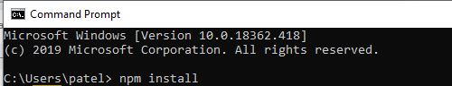
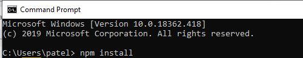

Introduction
Node.JS is an open source source environment that uses Javascript on the server. It uses Chrome's
V8 engine and is event-driven. It's commonly used create dynamic page content, collect data, and
manipulate files & items in the database. Before you use Node, it MUST be initiated on the server
otherwise it won't have any effect.
Applications that use Node.JS
- Ebay
- Quizlet
- Netflix
- Paypal
Tutorial
First things first, in order to even use Node you have to download it. Let's get started...
- Download Node here: Click Me!
- When the download is complete, run the installer.
- Restart your computer to ensure that everything works properly.
You can also install the node package manager. Node package manager contains respositories
for node packages/modules. Modules are similar to Javascript libraries. They contain a set of functions that you want to use
and include in your project.You can also access them through this link:
nodejs.org Otherwise you can install it through the command line like so..

After you see a success message at the end of the execution, go to the location where the packages would be installed. You should have something that looks like this..

These folders that you see are essentially examples of other applications that use node. The benefit of having these packages is that you can resuse that code, see different ways to solve a problem, and share code with other npm users. Think of it like GitHub.

After you see a success message at the end of the execution, go to the location where the packages would be installed. You should have something that looks like this..
These folders that you see are essentially examples of other applications that use node. The benefit of having these packages is that you can resuse that code, see different ways to solve a problem, and share code with other npm users. Think of it like GitHub.
Now let's create our first Node application! Open up Visual Studio, create a new project, and add a HTML page.
We are going to load a page using the HTTP module and port number.
Now, open up Visual Studio, create a new project, and add a javascript file by right-clicking on the project.
In the Javascript file, we will include the HTTP module by doing the following:

Require is used to retrieve the module that we will be using and a reference is getting stored in the const http. We will use const http to access the functions that are a part of the HTTP module.
In the Javascript file, we will include the HTTP module by doing the following:
Require is used to retrieve the module that we will be using and a reference is getting stored in the const http. We will use const http to access the functions that are a part of the HTTP module.
Now, let's create a server.